Hi, I'm Amy Roche! I'm a graduate game developer from the University of Technology Sydney who loves coming up with and expressing unique ideas and stories through the infinite possibilities that game development provides. I love game development not only because I love playing games, but because it's an art form that naturally combines skills and fields I'm passionate about. Storytelling, visual arts, logic and puzzle solving, mathematics, music, and teamwork are all parts of games and being a game developer that inspire and excite me. Due to this discipline's skill diversity, I believe game development is one of the most challenging jobs in the world, yet also one that never gets boring, as it will allow me to continue learning and growing forever.
My most valuable skill as a game developer is as a creative thinker and as someone who loves to work with others. Teamwork and communication are the most important things when creating something as complicated and large as a game, and I think working with other talented people in games is how you create something truly magical.
My favourite engine to work in, and the one I am most experienced in, is Unity, as I really enjoy the freedom it provides and the C# coding language. I also have experience in and enjoy Unreal Engine due to the polish and quality it can achieve. These engines have allowed me to create a diverse range of games in my career so far, from party games to insular story puzzle experiences. My last project, 'Unspoken', I think, is the best showcase of my creativity and voice as a game developer. This game allowed me to express what I thought was a truly unique idea: a language puzzle game through audio only, rather than the typical written format of the genre. This was an immense challenge in game design and programming, but through that struggle, my team and I achieved a quality demonstration of this concept that was greatly rewarding in its process and completion.
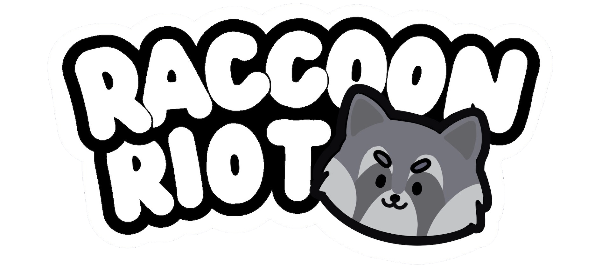

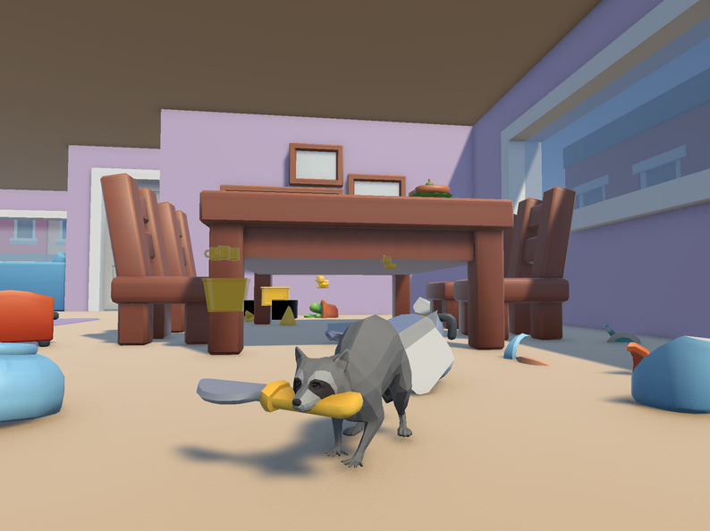

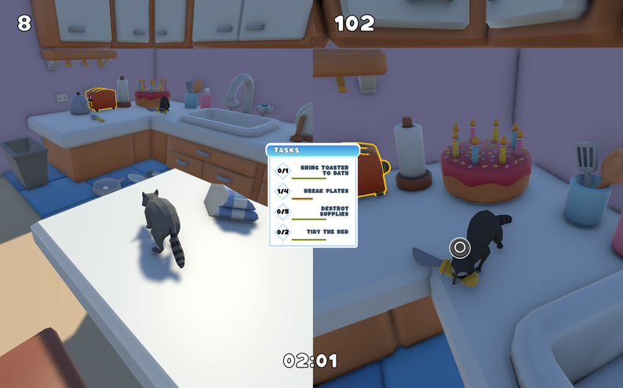
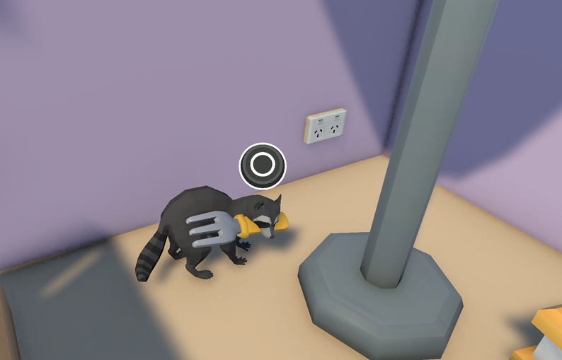
An action-packed multiplayer party game that puts players in the mischievous minds of raccoons on a midnight raid.

I spent a lot of time making small code adjustments to a free Unity chaos physics program to fit our use case, and tuning the settings for different items. As you can see, the intention to make an exploding 'Roomba' did not work at first as intended.

Instead of having a health bar UI element, I thought it would be a lot better to use an increasing amount of scratch decals on the Raccoon to indicate health. This makes sure that the player isn't too overwhelmed by information and makes the health system more intuitive for such a fast-paced game. The Raccoon's movement also slows & their walking animation changes when they are more damaged, again so they player doesn't have lots of UI to keep track of.

Making the different interactable objects was very fun. I had a lot of issues early on with the controls UI for different interactable objects. It took me a while to figure out how to get it to work, and to appear as the correct button on the correct type of interaction (pickup, drop, throw, interact, destruction).
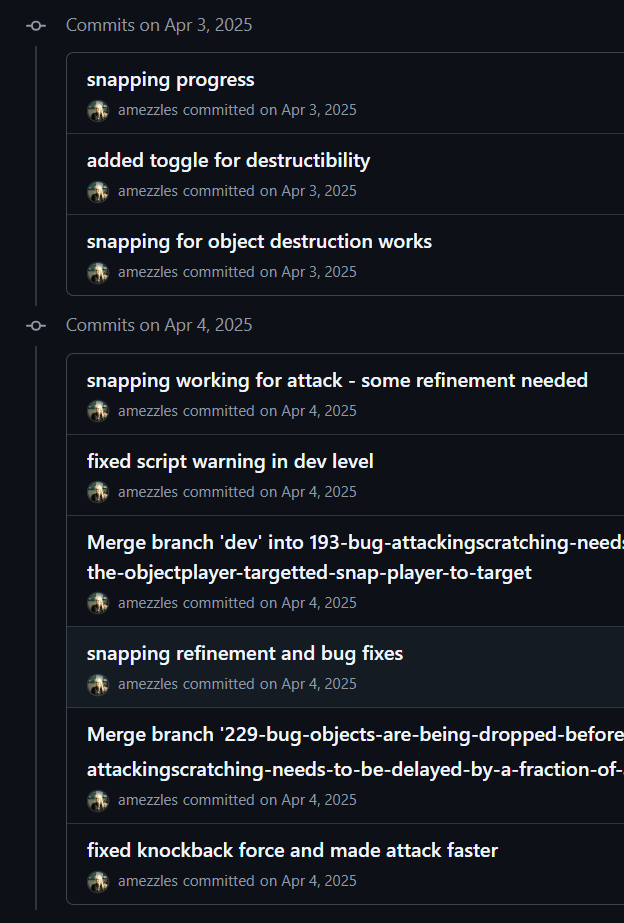
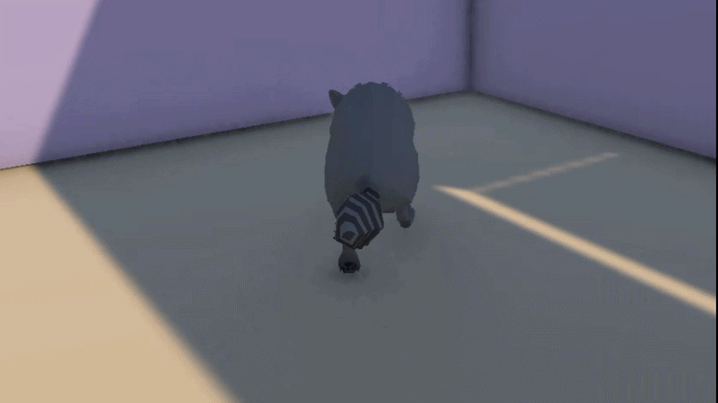
Learning the Unity decals system for the first time was really fun and I was proud of being able to achieve this scratch effect that can be performed on any wall or object in the game. It also adds to the player's overall points.

There were a lot of issues in early playtesting with player's not being able to find 'task-related' objects. This effect I implemented fixed a lot of those issues.
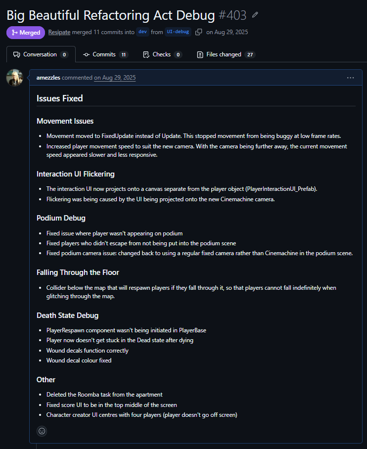
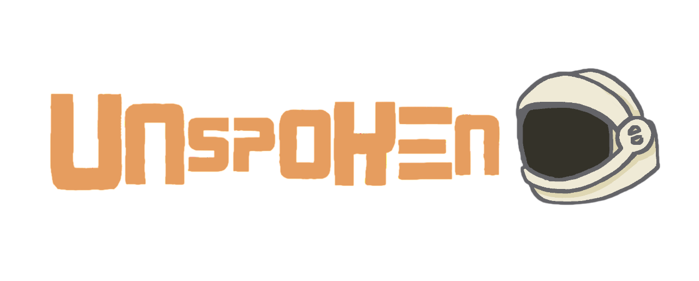


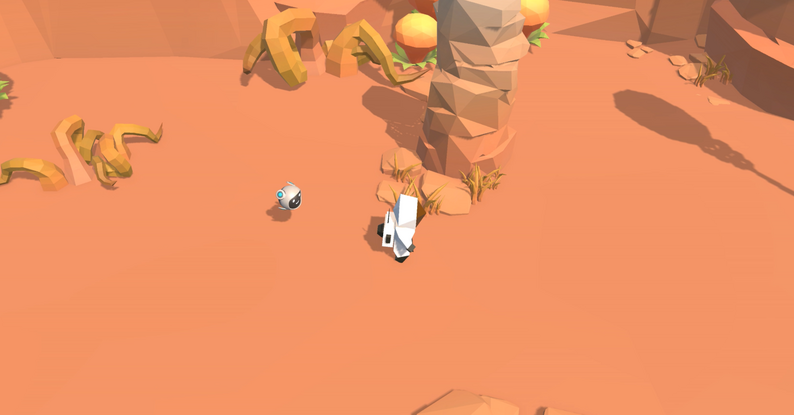
A linguistic puzzle adventure about listening, understanding, and finding your way home.

This gif shows ealy footage of the tutorial system I built. Each tutorial step ScriptableObject contains a trigger condition (triggered by our custom Event system) to continue to the next step in the queue. While this system worked well for the constant tutorial redesign/interation we were doing, the strict 'queue' design made it prone to breaking if a trigger event was broadcast too early. If reworking this system, I would probably combine the event triggers with a state machine to allow for early event triggering, and a more flexible queue-like data structure to make the tutorial step order more flexible.
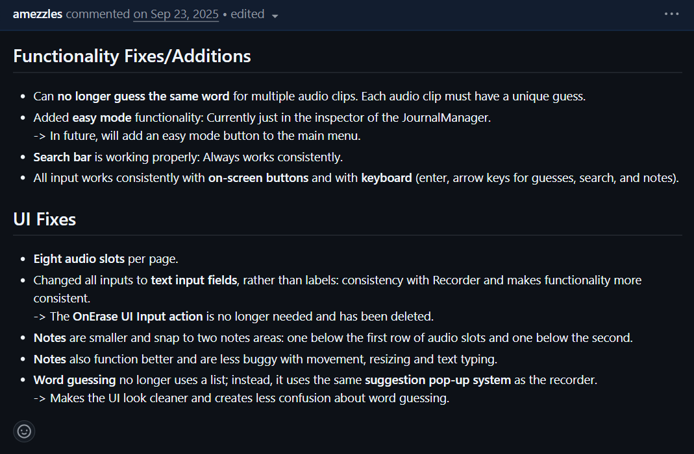
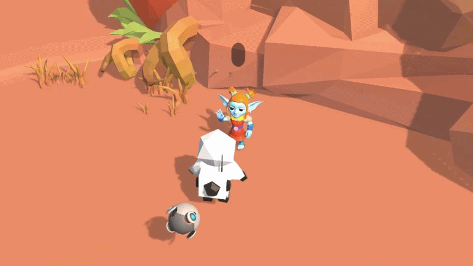
The NPC Action system was the combined work of multiple programmers, but I primarily built the animation/gesture events and the Inspector interface for it. A huge game design issue was how to show and not tell the player what words meant though NPCs. A vital part to the solution for this problem was triggering different animations during, before, or after NPC actions. While I was limited by our character models and the free animations available to us online, I was able to achieve a flexible system in which we could assign waving, pointing, head-nodding, and more animations to our NPC's actions.
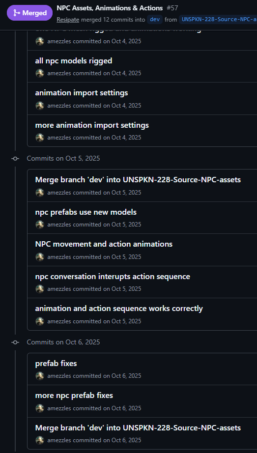
One of the biggest issues this project still faces is the NPC Action System. This was originally an Inspector interface for developers, in which each type of action would be added to an NPC gameObject's priority action queue or their default action queue. This became incredibly tedious as development went on, since we would end up with priority action queues of 50 or more actions, and editing/debugging this queue involved scrolling through a long list in the inspector. It was prone to breaking and while flexible, was difficult to use.
I am currently in the process of refactoring this system and transitioning it to a more OO sequence and schedue-based system. Actions are now ScriptableObjects, allowing them to be reused for different action sequences instead of being reconfigured every time. Different sequences of actions can be rearanged and reused for multiple NPCs, rather than forcing the developer to remake identical actions again and again (e.g. An identical 'Introduction' action sequence used across NPCs). I have also replaced the old coroutine action system with the new Unity 6 Awaitable systen, allowing for cleaner iteruption of actions and preventing event listener leaks and 'zombie' NPC states.
This system is still a work in progress, and in future I am hoping to develop a scheduling system for action sequences. Going even further I'd love to create a node-based graph system for complex NPC behaviour and decision making, which would facilitate more interesting & creative level/npc design.
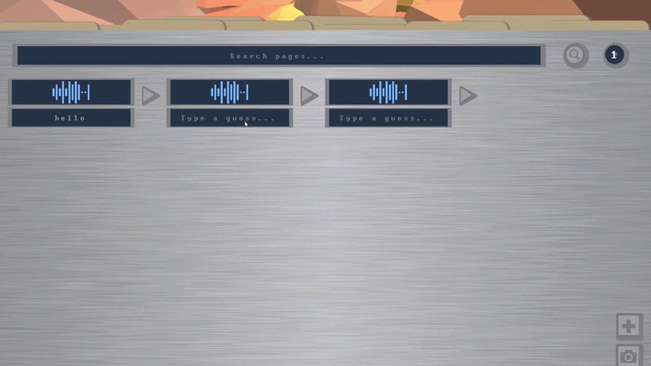
I soley was in charge of the UI for this project. The journal system especially took a lot of playtesting and iteration to get right visually and functionally, and I'd say Unity UI Toolkit and I developed a love hate relationship throughout.
This was a very challenging but rewarding interface to design, as the audio-based nature of our game, and having a commitment to not including a written form of the langauage made having visual interpretations of it difficult, something necessary for the UI. Games we had taken a lot of inspiration from in other areas such as Chants of Sennaar became difficult to draw from in this area, as they rely heavily on the written language format for the player to keep track of the words.
It was clear an audio integration was necessary for the journal UI (the play button for each word), and another team member later developed a custom waveform generator as a way for users to somewhat visually distinguish between words (not seen fully functional in this image). I also developed a way for the player to add their own notes in the space under each word by pressing the [+] button. As the game progresses and more words are added, the player can write whatever they need to to keep track of context clues and hints about a word's meaning before they are certain of its translation.

I love particle effects :)
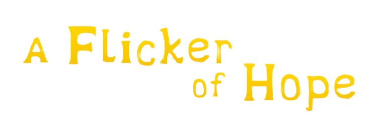

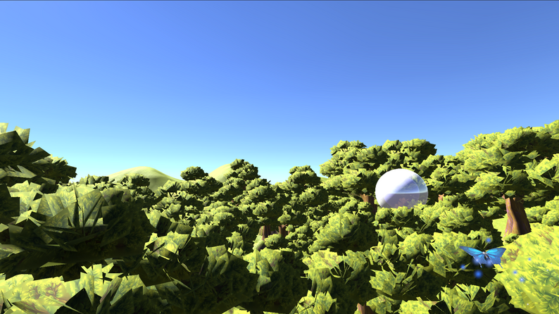
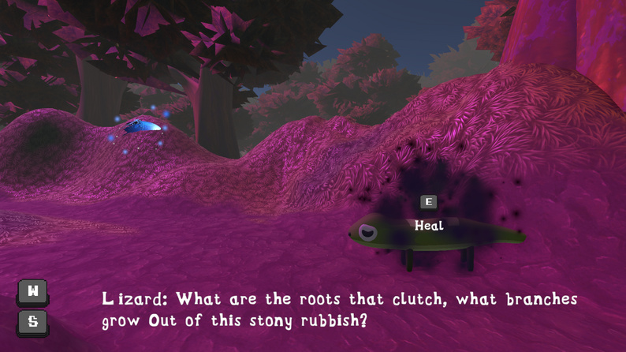
A Flicker of Hope follows a butterfly on a quest to restore an enchanted forest consumed by a dark curse...
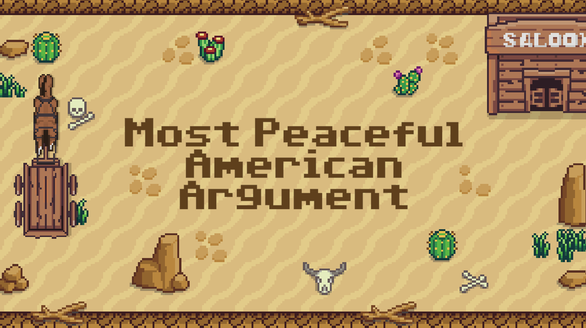
A Unity project where my team and I created a game based on another team's description of a reimagined retro game. The game was completed in one week and was an exercise in team management and task prioritisation.
View Project
An Unreal Engine C++ programming project in which I created a realistic fish AI system using boid flocking and a state machine.

A Three.js learning assignment in which I programmed a randomly generated forest environment and bird movements.

I learned how to program a movement sensor and a Raspberry Pi AI camera in python to detect the difference between cats and dogs and trigger a motor system.
View Project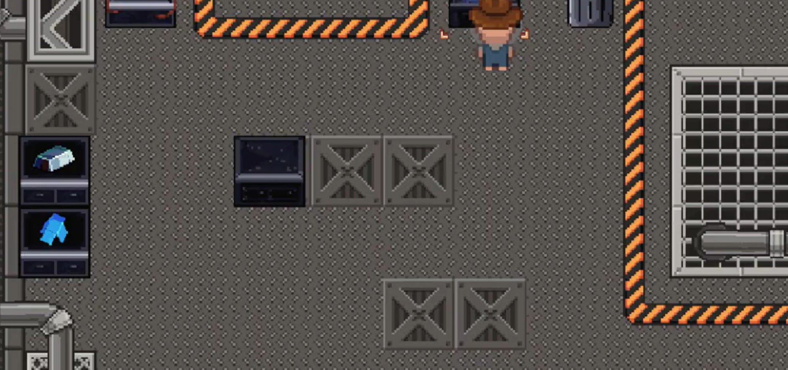
Travel back in time through the life of this toy factory owner. Do your best to complete orders on time, and have fun. This was my first full Unity game I created.
View Project